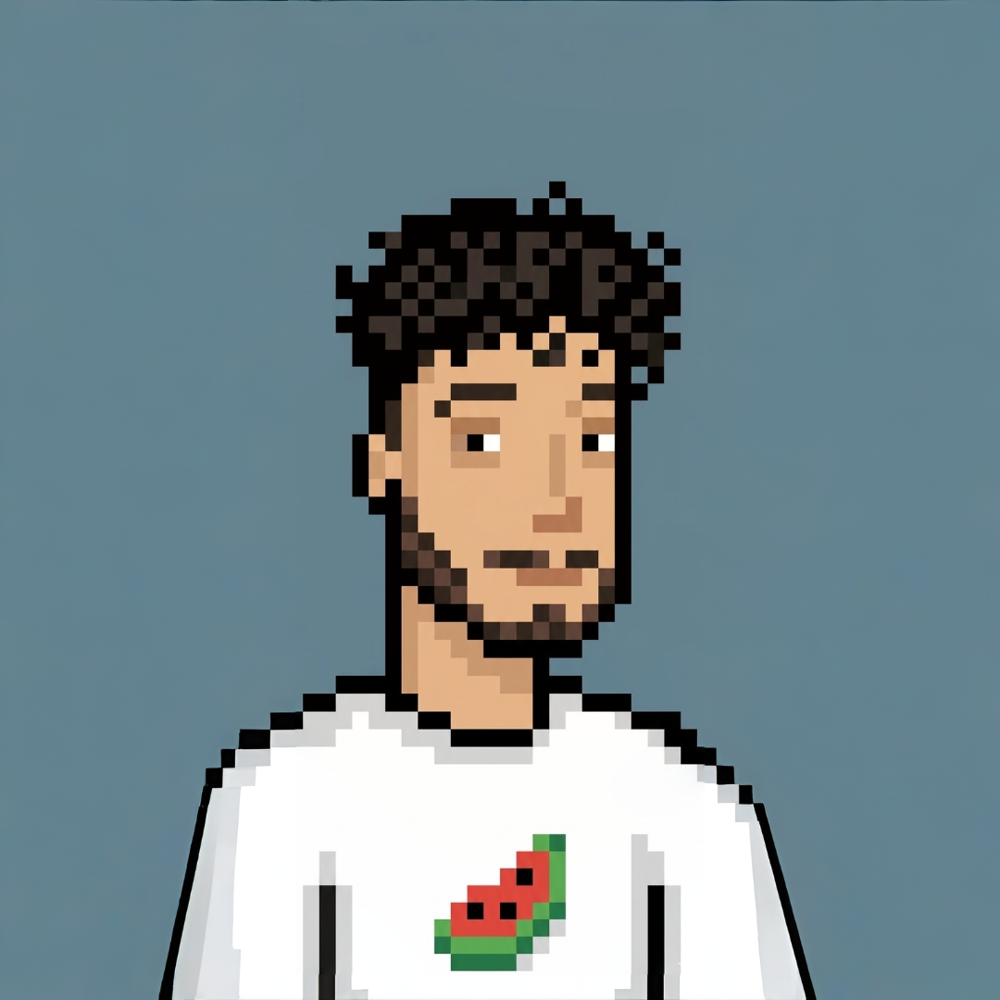

hakkımdaabout
cat ~/profile.md

# DevOps & Network Engineer in trainingclassSystemsAdmin:def__init__(self): self.focus = ["DevOps", "Linux", "Networking", "Cloud"] self.environment = "Homelab" self.containers = "Docker" self.automation = ["Bash", "Python", "AI-driven"] self.networking = ["VPN", "Firewall", "DNS", "Monitoring"]defbuild_infrastructure(self):# AI-assisted container orchestrationreturn"Low-resource, scalable systems"defmonitor(self):# Centralized logging & observabilityreturn["Syslog", "Grafana", "Log aggregation"]
Linux tabanlı homelab ortamlarında container tabanlı servisler tasarlıyor ve işletiyorum. AI destekli sunucu otomasyonu, sanal ağ laboratuvarları, VPN altyapıları ve merkezi loglama/monitoring sistemleri üzerine çalışıyorum. İş süreçlerini, veri yönetimini ve altyapıyı bütünleşik olarak ele alan bir YBS perspektifine sahibim. I design and operate container-based services in Linux homelab environments. I work on AI-driven server automation, virtual network labs, VPN infrastructure, and centralized logging/monitoring systems. I bring an MIS perspective that integrates business processes, data management, and infrastructure.
eğitimeducation
ls -la ~/academic/
sertifikalarcertificates
cat ~/certs/*.json
projelerprojects
tree ~/projects/
- Düşük kaynak tüketimli Linux sunucu üzerinde Docker ve docker-compose ile modüler konteyner altyapısı
- Web UI, DNS filtreleme, monitoring bileşenleri ters vekil (reverse proxy) arkasında izole servisler olarak çalıştırma
- OpenClaw ve Kimi K2.5 API ile sunucu metriklerini (CPU, RAM, disk, servis durumu) analiz eden AI otomasyon pipeline'ı
- Model çıktılarını komut ve script'lere dönüştüren kontrollü yürütme mekanizması
- Kritik operasyonlar için onay adımı — güvenli yarı otonom sunucu yönetimi
- Git ile versiyon kontrollü konfigürasyon dosyaları, rollback ve yedekleme prosedürleri
- Modular container infrastructure on low-resource Linux server with Docker and docker-compose
- Web UI, DNS filtering, monitoring components running as isolated services behind reverse proxy
- AI automation pipeline analyzing server metrics (CPU, RAM, disk, service health) via OpenClaw and Kimi K2.5 API
- Controlled execution mechanism converting model outputs to commands and scripts
- Approval step for critical operations — secure semi-autonomous server management
- Version-controlled configuration files with Git, rollback and backup procedures
- VirtualBox üzerinde router, DNS sunucu ve istemci rollerinde çoklu Linux VM'ler ile ağ topolojisi
- Internal network ve DMZ benzeri segmentler ile internet erişim senaryoları
- ping, traceroute, netstat/ss, tcpdump, nmap ile TCP/IP, DNS, HTTP/HTTPS trafik analizi
- SSH anahtar tabanlı kimlik doğrulama ve ufw firewall kuralları
- WireGuard/OpenVPN ile iç ağa güvenli uzaktan erişim ve servis yönetimi
- Network topology with multiple Linux VMs acting as router, DNS server and clients on VirtualBox
- Internal network and DMZ-like segments with internet access scenarios
- TCP/IP, DNS, HTTP/HTTPS traffic analysis with ping, traceroute, netstat/ss, tcpdump, nmap
- SSH key-based authentication and ufw firewall rules
- Secure remote access to internal network via WireGuard/OpenVPN for service management
- Birden fazla Linux sunucudan merkezi log sunucuya sistem loglarının toplanması
- rsyslog/syslog ile servis, güvenlik ve ağ olaylarının tek noktada birleştirilmesi ve filtrelenmesi
- CPU, bellek, disk ve ağ kullanımı için hafif monitoring araçları ve dashboard'lar
- Temel gözlemlenebilirlik (observability) altyapısı ile servis sağlığı izleme
- Collecting system logs from multiple Linux servers to a central log server
- Aggregating and filtering service, security and network events via rsyslog/syslog
- Lightweight monitoring tools and dashboards for CPU, memory, disk and network usage
- Basic observability infrastructure for service health monitoring
araçlartools
dpkg -l | grep -E "(docker|git|python)"
- Linux
- Ubuntu
- Debian
- Docker
- docker-compose
- Container Orchestration
- Git
- GitHub
- Git Workflows
- Bash Scripting
- Python
- CI/CD Pipelines
- SQL
- R (Statistics)
- Relational DB Design
- ping, traceroute
- netstat/ss, tcpdump
- nmap, WireGuard/OpenVPN
- Grafana
- Syslog / rsyslog
- Log Aggregation
- YAML
- JSON
- Infrastructure as Code